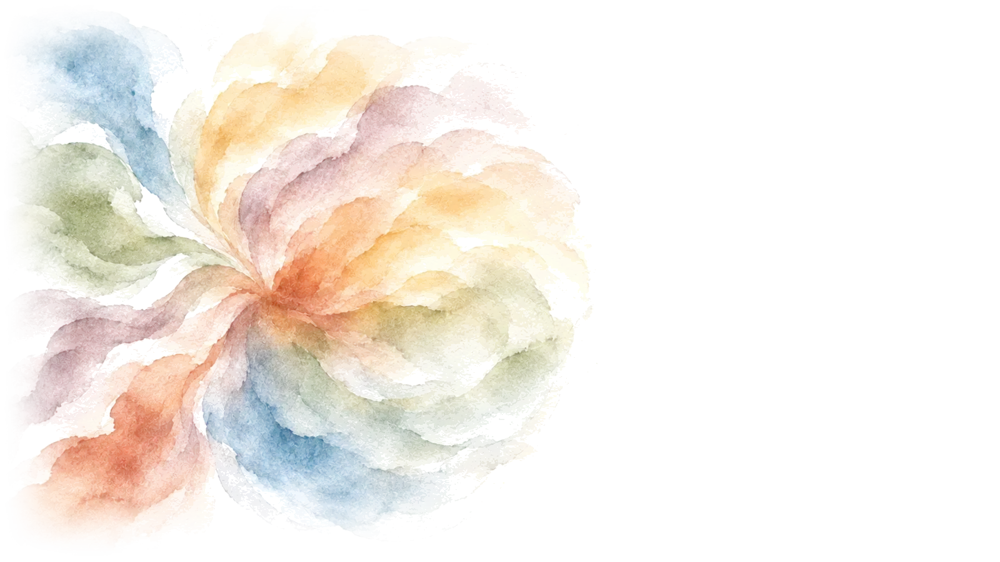
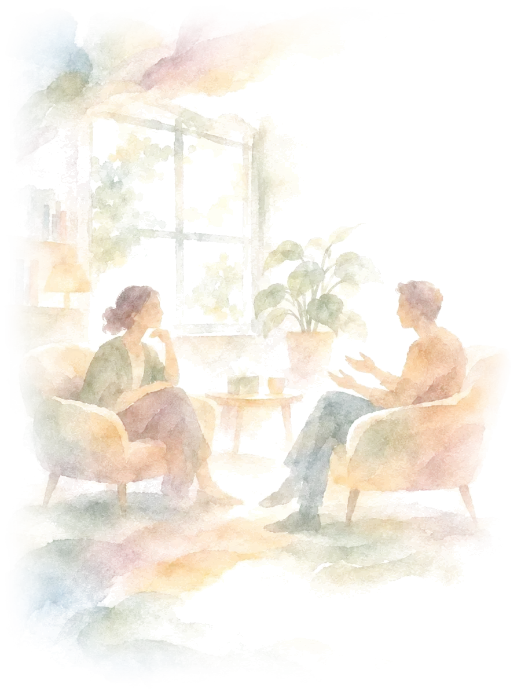

У разных направлений психотерапии есть свои взгляды на эти вопросы. Я хочу познакомить вас с некоторыми идеями гештальт-подхода, в котором работаю сама.
Человек и окружающий мир
Мы устроены таким образом, что для поддержания жизни и её полноценного проживания нам необходимо постоянно взаимодействовать с окружающим миром.
Мы нуждаемся в еде, отдыхе, безопасности, близости с другими людьми, возможности проявлять себя, исследовать что-то новое, влиять на происходящее вокруг нас. Какие-то из этих потребностей мы можем удовлетворить самостоятельно, для удовлетворения других нам совершенно необходимы другие люди.
При этом у нас есть довольно сложная система ориентации в собственных потребностях и в окружающем мире.
Мы можем чувствовать, что проголодались, испытывать удовольствие от общения с конкретным человеком, злиться, когда кто-то мешает нам делать важное для нас дело, тревожиться, предвосхищая возможную угрозу. Мы можем размышлять о происходящем, соотносить его с предыдущим опытом, придумывать разные варианты действий и прогнозировать их последствия.
В идеальном варианте всё это позволяет нам довольно хорошо ориентироваться в том, чего нам хочется, что из этого возможно в нынешних обстоятельствах и как мы можем это получить.
Но мы можем, например, совершенно не замечать собственной усталости. Можем испытывать огромное желание сблизиться с человеком и при этом вести себя так, что он будет держаться от нас подальше. Можем годами прикладывать усилия к достижению какой-то цели, не особо задумываясь о том, чего мы вообще рассчитываем получить по её достижении и нужно ли оно нам.
И вот это – то, как устроено наше взаимодействие с собой, другими людьми и реальностью в целом, – во многом и составляет предмет нашего интереса в гештальт-терапии.
Давайте рассмотрим несколько идей, лежащих в основе этого подхода.
Осознавание
Представьте, что вы возвращаетесь домой после рабочего дня. Близкий человек предлагает вместе куда-нибудь сходить, а вы почему-то раздражаетесь.
Можно проигнорировать это раздражение и согласиться. Можно раздражённо ответить, что вам никуда не хочется. А можно немного поинтересоваться тем, что с вами сейчас происходит.
На что именно я злюсь? На сам факт предложения? На то, что человек не поинтересовался предварительно моим состоянием? А как я вообще себя чувствую? Сколько у меня сейчас сил? Чего бы мне хотелось?
В процессе может выясниться, например, что вы очень устали от общения с людьми за день и вам хочется провести какое-то время в одиночестве. Или что вам, наоборот, очень хочется побыть с близким человеком, но в более спокойной обстановке, где не нужно никуда спешить, что-то организовывать и принимать решения.
А может, дело вообще не в сегодняшнем дне и вы уже какое-то время злитесь на этого человека в связи с совершенно другой ситуацией.
В зависимости от того, что вы обнаружите, довольно сильно будут различаться и варианты дальнейших действий.
Чувства как источник информации
В гештальт-подходе мы уделяем много внимания чувствам, в том числе потому, что они помогают нам ориентироваться в собственных потребностях и в происходящем вокруг.
- Злость
- может помочь заметить, что что-то в происходящем нас не устраивает.
- Грусть
- обнаружить значимость того, что мы потеряли или не можем получить.
- Радость
- обратить внимание на то, что приносит нам удовлетворение.
При этом связь между чувством, потребностью и конкретной ситуацией далеко не всегда очевидна. И довольно интересно бывает её исследовать.
Например, за злостью на близкого человека можно обнаружить и потребность в отдыхе, и желание большей самостоятельности, и потребность в его внимании, и страх потерять отношения.
Сам факт того, что я злюсь, даёт мне некоторую информацию. А дальнейшее исследование позволяет эту информацию конкретизировать.
Фигура и фон
Есть такая идея в гештальте: из всего многообразия происходящего в каждый конкретный момент что-то становится для нас особенно значимым, выходит на передний план – становится фигурой. Всё остальное на какое-то время остаётся фоном.
Если вы сильно проголодались и идёте по улице, вполне вероятно, что ваше внимание будут привлекать вывески кафе, запах выпечки и люди, несущие в руках что-нибудь съестное. Хотя на этой же улице происходит ещё куча всего интересного.
С большей частью наших потребностей происходит примерно то же самое, хотя и не всегда настолько явно.
В зависимости от нашего состояния, жизненного контекста и потребностей одни и те же вещи могут вызывать у нас совершенно разные чувства, привлекать наше внимание или оставаться практически незамеченными.
В процессе терапии мы в том числе учимся замечать, что именно сейчас выходит на передний план, с чем это связано и чего нам в связи с этим хочется.
Здесь и сейчас
Возможно, вы слышали, что в гештальт-терапии большое внимание уделяется происходящему здесь и сейчас.
Это вполне сочетается с тем, что мы можем много говорить о детстве, о событиях десятилетней давности или о планах на ближайшие несколько лет.
Мне, как терапевту, будет интересно в том числе то, что происходит с вами прямо сейчас, когда вы об этом рассказываете.
- Какие чувства вызывает это воспоминание?
- Как меняется ваше состояние по мере рассказа?
- На каких моментах хочется остановиться подробнее?
- Что происходит с вами, когда вы рассказываете об этом другому человеку и получаете от него какую-то реакцию?
Событие могло произойти двадцать лет назад, но отношение к нему, чувства с ним связанные, представления о себе и о мире, сформировавшиеся в результате этого опыта, – всё это может быть частью вашей нынешней жизни.
И с этой частью вашей жизни мы можем соприкасаться прямо на сессии.

Целостность
В гештальт-подходе мы рассматриваем человека целостно, принимая во внимание его телесный, эмоциональный, мыслительный опыт и то, как всё это связано между собой и с условиями, в которых человек живёт.
Для наглядности возьмём такую ситуацию.
Вы довольно давно размышляете о смене работы. Составляете списки плюсов и минусов, изучаете вакансии, периодически обсуждаете эту идею с близкими. Но принять решение никак не получается.
Можно продолжать анализировать рынок труда, собирать информацию, сопоставлять аргументы.
А можно немного расширить область исследования.
- Чувства
Например, обратить внимание на то, какие чувства вызывает сама мысль о смене работы. Может быть, там много страха. Тогда интересно, с чем именно он связан. С возможностью остаться без денег? С необходимостью знакомиться с новыми людьми? С вероятностью обнаружить, что вы в чём-то не так компетентны, как хотелось бы?
- Силы
А сколько у вас вообще сейчас сил? Может быть, вы уже довольно давно работаете на пределе своих возможностей и сама идея о необходимости составлять резюме, проходить собеседования и осваиваться на новом месте вызывает вполне закономерное желание лечь и полежать.
- Убеждения
Какие у вас есть представления о том, как вообще должна складываться профессиональная жизнь человека? Может быть, вы считаете, что уход с работы, в которую вложено столько сил, будет означать, что вы не справились.
- Привязанности
А может, есть какие-то вещи, с которыми вам очень грустно будет расставаться, – например, с коллективом, в котором за несколько лет сложились тёплые отношения.
Получается, в одном вопросе о смене работы может быть задействовано множество чувств, потребностей, убеждений, особенностей вашего текущего состояния и вполне объективных обстоятельств жизни.
И каждое новое обнаруженное обстоятельство может довольно сильно менять наше представление о ситуации в целом.
Внутренние конфликты
Иногда в нас одновременно существует несколько разнонаправленных желаний.
- Хочется отдохнутьно страшно что-то не успеть
- Хочется высказать своё недовольство близкомуно страшно его обидеть
- Хочется проявиться, поделиться своими мыслямино одновременно с этим хочется защитить себя от возможной критики
На разрешение таких конфликтов мы можем тратить довольно много сил, даже если со стороны кажется, что мы вообще ничего не делаем.
В терапии интересно бывает исследовать каждую из этих сторон: чего она хочет, чего боится, о какой нашей потребности заботится.
Если я, например, обнаружу, что за желанием отложить важное дело стоит вполне реальная потребность в восстановлении сил, а за стремлением во что бы то ни стало его закончить – тревога за своё финансовое благополучие, у меня появится несколько больше возможностей для размышления.
Может быть, можно изменить сроки? Или объём работы? Или обратиться за помощью? Или каким-то другим способом обеспечить себе финансовую безопасность, чтобы позволить себе полноценно отдохнуть?
Не всегда удаётся найти вариант, который полностью устроит обе стороны. Но само понимание того, в чём именно заключается конфликт, позволяет более осмысленно с ним обходиться.
Организмическая саморегуляция
За этим несколько громоздким названием стоит довольно интересная идея о способности живого организма регулировать свою жизнедеятельность в соответствии с возникающими потребностями и изменениями окружающей среды.
На самом простом уровне – мы чувствуем усталость, отдыхаем, восстанавливаемся, и у нас вновь появляется желание что-то делать.
С более сложными потребностями всё несколько интереснее. Например:
- 1почувствовать одиночество
- 2обнаружить желание близости с другим человеком
- 3найти возможность эту близость получить
- 4побыть в контакте
- 5получить удовлетворение от общения
На каждом из этих этапов могут возникать сложности.
Мы можем не распознавать одиночество. Можем распознавать, но считать, что нуждаться в других людях стыдно. Можем вполне признавать своё желание близости, но не знать, как её выстраивать. Можем находиться в обстоятельствах, где подходящих для этого людей пока просто нет.
В терапии мы можем исследовать, на каких именно этапах возникают сложности, с чем они связаны и какие возможности у нас есть в каждом конкретном случае.
Контакт
В гештальт-подходе человек рассматривается в неразрывной связи с окружающей его средой.
Мне очень нравится эта идея, в том числе потому, что она позволяет рассматривать наши психологические особенности с учётом того, в каких условиях они сформировались и в каких условиях мы живём сейчас.
Допустим, человек в детстве обнаружил, что самый надёжный способ сохранять хорошие отношения со значимыми взрослыми – внимательно отслеживать их состояние, стараться предугадывать их желания и по возможности не проявлять собственное недовольство.
В той конкретной среде это могло быть очень даже удачным способом удовлетворения важнейших потребностей ребёнка – в безопасности, принятии и сохранении отношений с людьми, от которых он зависит.
Во взрослом возрасте человек может продолжать выстраивать отношения примерно таким же образом. В том числе с людьми, которые вполне готовы интересоваться его желаниями, учитывать их и обсуждать возникающие разногласия.
И тут получается довольно грустная ситуация – вокруг уже есть люди, с которыми потенциально можно выстраивать очень удовлетворительные отношения, но человеку сложно воспользоваться этой возможностью, потому что он умеет выстраивать отношения несколько иначе.
Творческое приспособление
В течение жизни мы постоянно приспосабливаемся к меняющимся условиям.
Осваиваем новые навыки, формируем представления о том, как устроен мир и другие люди, находим способы получать необходимое нам в конкретных обстоятельствах.
Какие-то из этих способов продолжают хорошо работать на протяжении всей жизни, какие-то со временем теряют свою актуальность.
При этом один и тот же способ взаимодействия с миром может быть очень удачным в одних обстоятельствах и совершенно неудачным в других.
Например, способность сдерживать свои чувства и быстро принимать решения может быть крайне полезна в экстренной ситуации. Но если я таким же образом обхожусь со своими чувствами в близких отношениях, мне может быть сложно замечать и обсуждать то, что в этих отношениях происходит.
Идея творческого приспособления в том числе связана с нашей способностью находить новые способы взаимодействия со средой, исходя из собственных потребностей и актуальных обстоятельств.
Чем больше у меня таких способов, тем больше у меня возможностей.
Если единственный известный мне способ справиться со злостью на близкого человека – отстраниться от него, я оказываюсь довольно ограничена в своих действиях.
Если я также умею замечать, с чем связана моя злость, говорить о ней в понятной и уважительной по отношению к другому форме, выдерживать его реакцию, обсуждать разногласия, договариваться, то у меня появляется уже гораздо больше вариантов того, как может развиваться ситуация.
При этом опция отстраниться от человека никуда не девается. В каких-то обстоятельствах именно она может оказаться наиболее подходящей.
Граница контакта
В гештальте есть понятие границы контакта – условного места встречи человека и окружающего мира.
Именно в этой встрече мы можем обнаруживать и себя, и Другого.
Например, в разговоре с близким человеком я могу заметить, что мы по-разному смотрим на какую-то ситуацию. Могу обнаружить, насколько для меня значима моя точка зрения, какие чувства вызывает его несогласие, хочется ли мне продолжить обсуждение и почему.
При этом у меня есть возможность узнать что-то новое о собеседнике, о его взглядах, ценностях, опыте, с которым они связаны.
И уже исходя из этой новой информации может меняться наше представление и друг о друге, и о себе, и о ситуации, которую мы обсуждаем.
В контакте мы постоянно получаем новую информацию, что-то усваиваем, что-то отвергаем, что-то переосмысливаем. Во многом за счёт этого мы и развиваемся на протяжении жизни.
Как всё это связано с тем, что происходит в кабинете психолога?
Отношения с психологом – это тоже часть вашей жизни, реальный контакт с другим человеком.
И какие-то особенности того, как вы выстраиваете отношения с людьми, как обходитесь со своими чувствами и потребностями, могут проявляться прямо в процессе нашего общения.
Например, вы можете заметить, что вам сложно рассказать мне о том, что какая-то моя реплика вас задела. Или что вам очень хочется получить от меня конкретный совет, хотя у вас уже есть собственные соображения о том, как хотелось бы поступить. Или что, рассказывая о каком-то очень грустном событии, вы начинаете улыбаться.
Всё это может стать предметом нашего совместного интереса.
Мы можем остановиться на каком-то из этих моментов, поразмышлять о том, что с вами происходит, с чем это может быть связано. Я могу поделиться тем, как воспринимаю происходящее со своей стороны, и поинтересоваться, как вам моя обратная связь.
А ещё у нас есть возможность попробовать что-то сделать немного иначе и посмотреть, что из этого выйдет.
Например, всё-таки озвучить своё несогласие со мной и обнаружить, что мы можем его обсудить. Или какое-то время побыть с грустью, не пытаясь срочно переключиться на что-то другое, и понаблюдать за тем, как меняется ваше состояние.
Мне важно, что в терапии мы можем не только размышлять о каких-то вещах, но и непосредственно получать новый опыт взаимодействия с другим человеком.

И к чему мы стремимся?
Мне нравится рассматривать психотерапию как процесс, в котором у человека постепенно становится больше возможностей.
- Более тонко чувствовать себя, замечать собственные потребности и понимать, с чем связаны те или иные переживания.
- Лучше ориентироваться в окружающей реальности.
- Находить разные способы заботиться о себе, выстраивать отношения с людьми, разрешать внутренние и межличностные конфликты.
Какие-то вещи, которые раньше требовали колоссального количества сил, со временем могут начать даваться гораздо легче. Где-то может появиться больше свободы в выборе того, как поступить. А где-то мы можем обнаружить, что тратим много сил на попытки изменить то, что от нас в действительности не зависит, и нам очень нужно сочувствие и поддержка в связи с этим.
Конечно, наша удовлетворённость жизнью зависит далеко не только от наших психологических особенностей. Есть вполне объективные обстоятельства, в которых мы живём, есть другие люди со своими желаниями и возможностями, есть множество вещей, которые мы не можем предвидеть и контролировать.
Но в рамках доступных нам возможностей мы можем учиться выстраивать своё взаимодействие с миром таким образом, чтобы получать от жизни больше удовлетворения.
И в этом деле я могу вам помочь.
В этой статье я описала лишь несколько положений гештальт-подхода и то, как они связаны с моим взглядом на психотерапию. Сам подход гораздо объёмнее, и многие из затронутых здесь тем заслуживают отдельных больших разговоров.
Если вам интересно, как именно я работаю, чего можно ожидать от наших встреч и с какими запросами ко мне можно обратиться, об этом можно подробнее почитать на сайте.
← Вернуться ко всем статьям